Hotové stavby
u zákazníkov
Každá je na mieru pozemku, takže dve rovnaké nenájdete. Filtrujte podľa toho, čo riešite — či už auto, terasu alebo tienenie.
292 fotografií z montáží
Vyberte si podľa toho, čo riešite


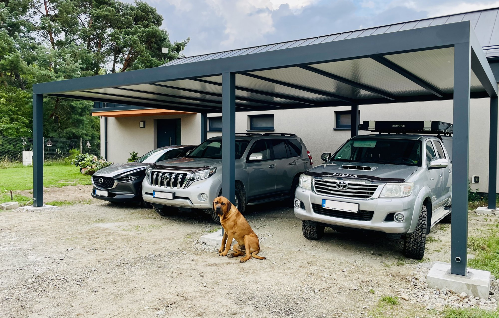
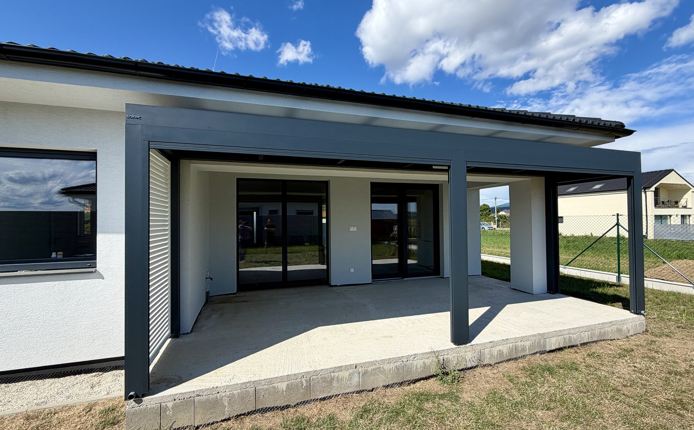
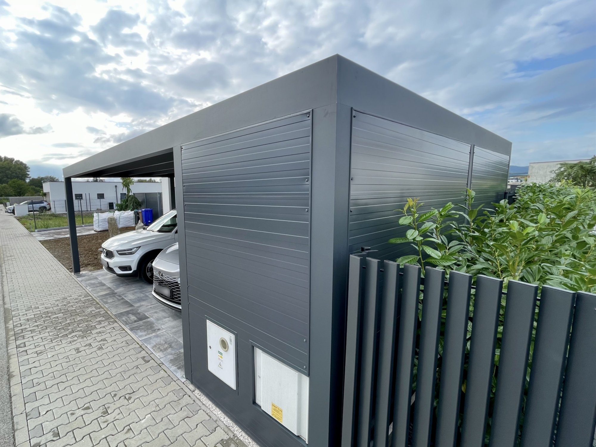

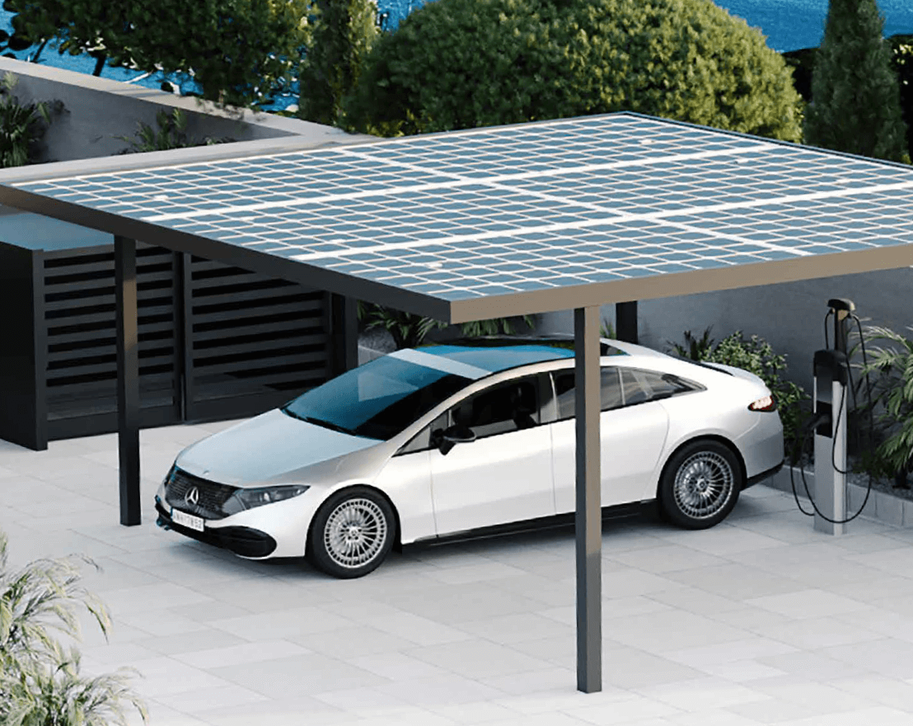


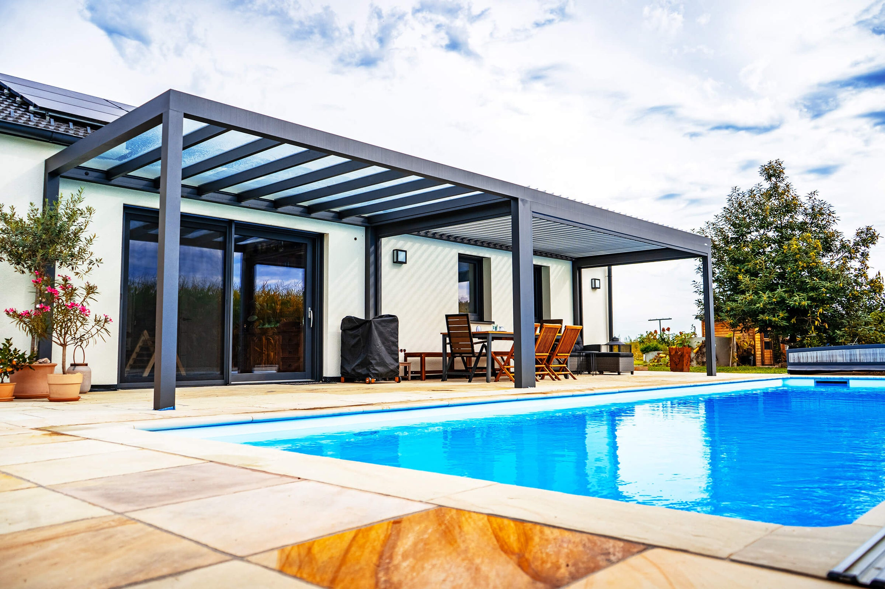
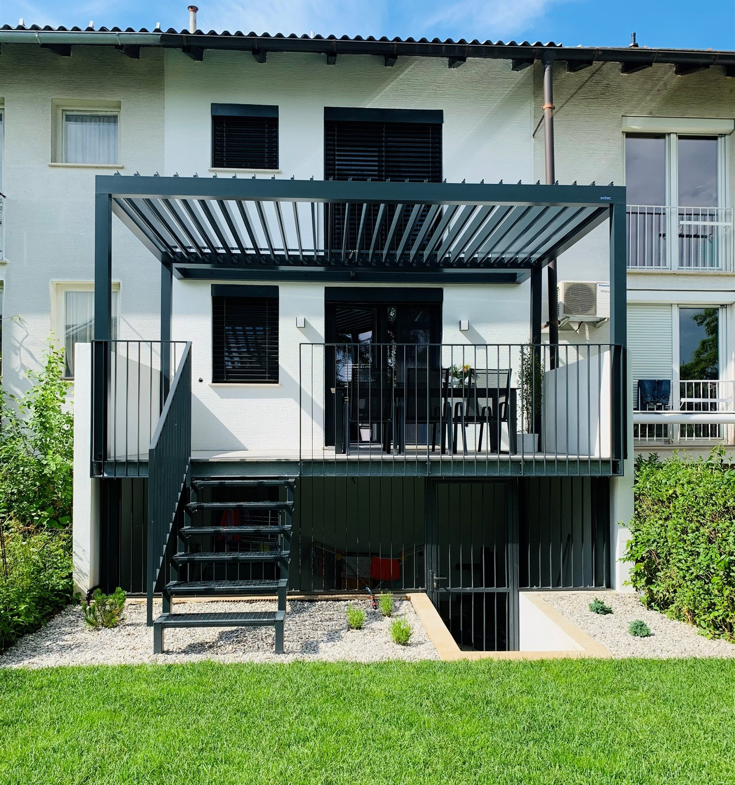

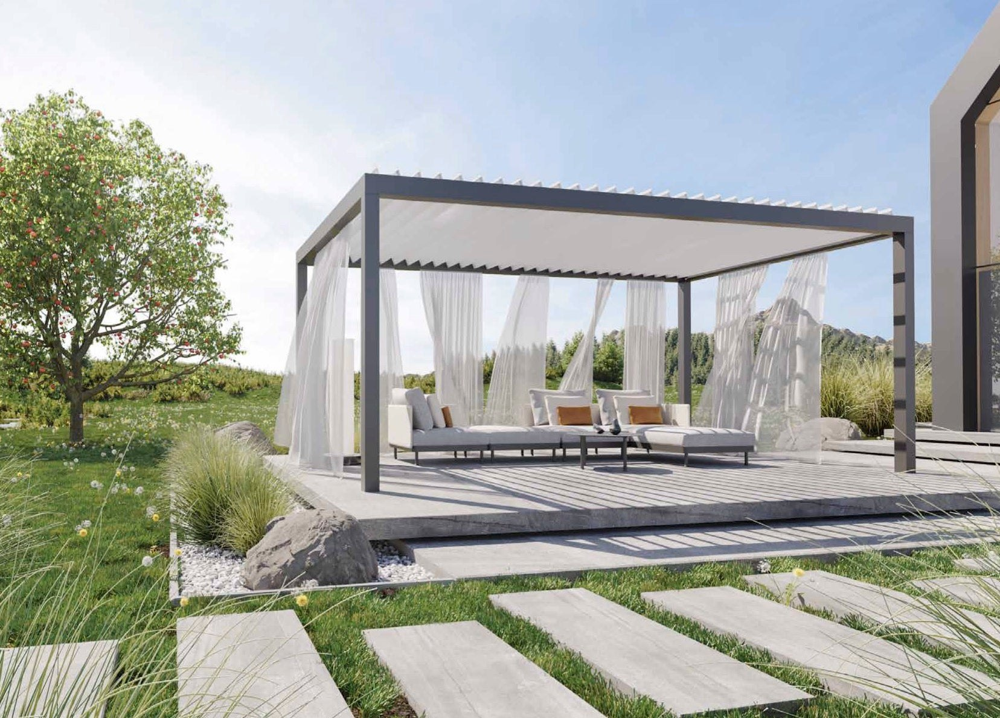
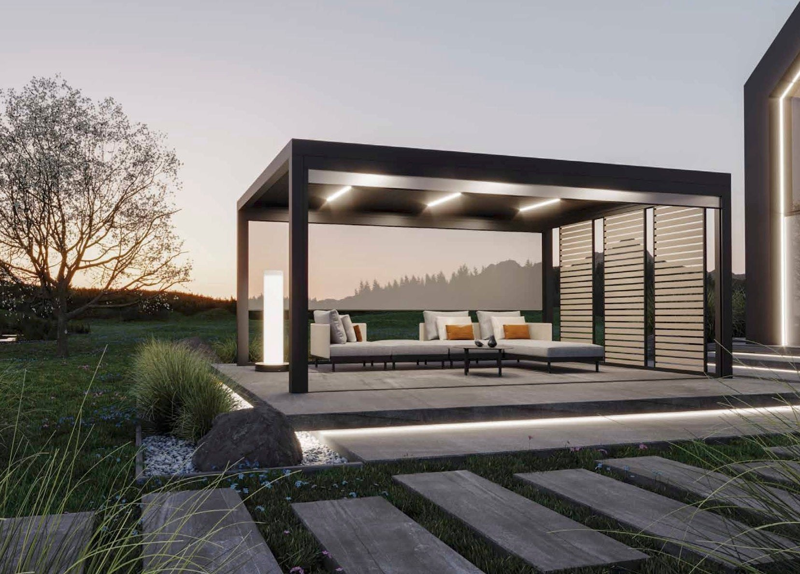
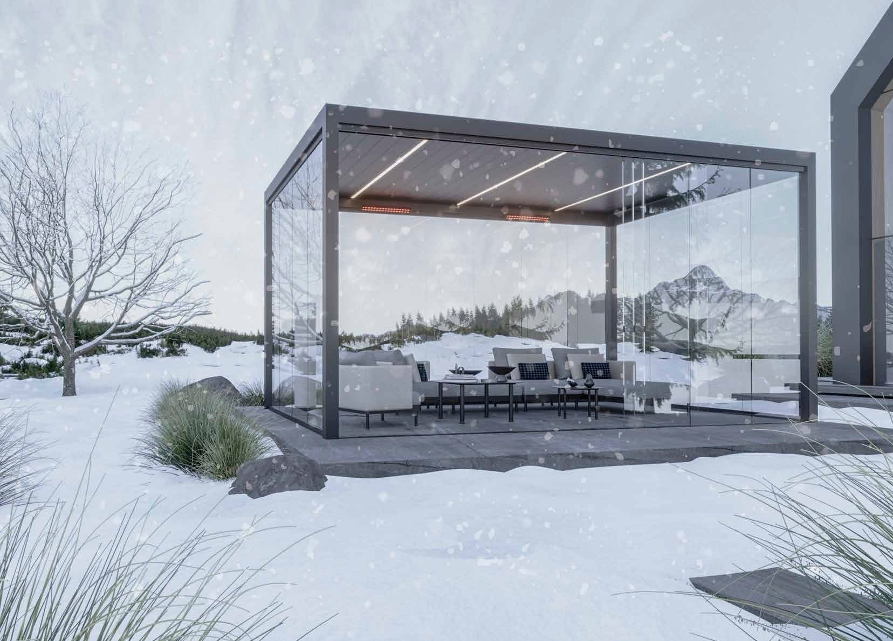

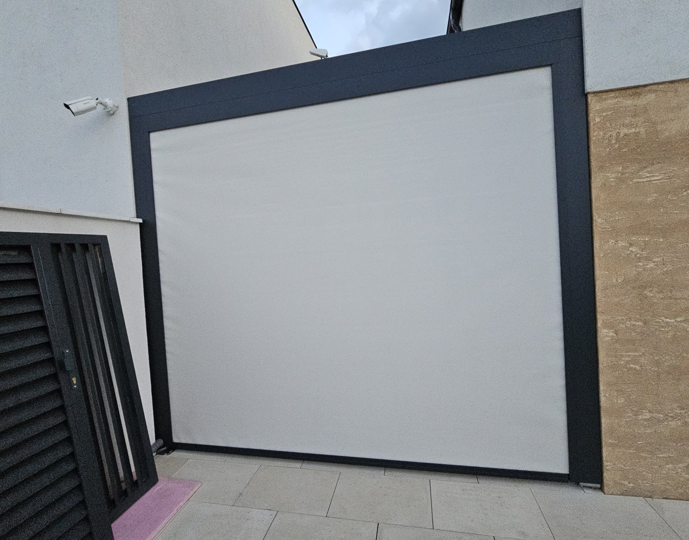

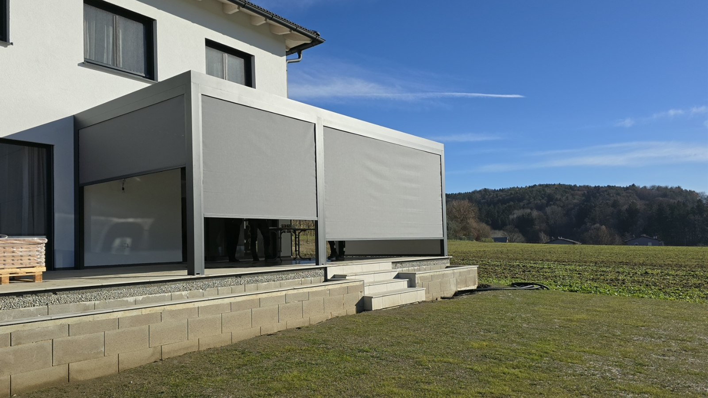

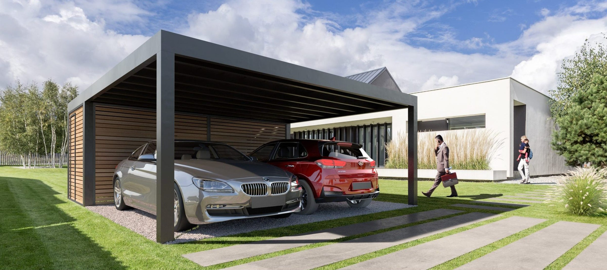
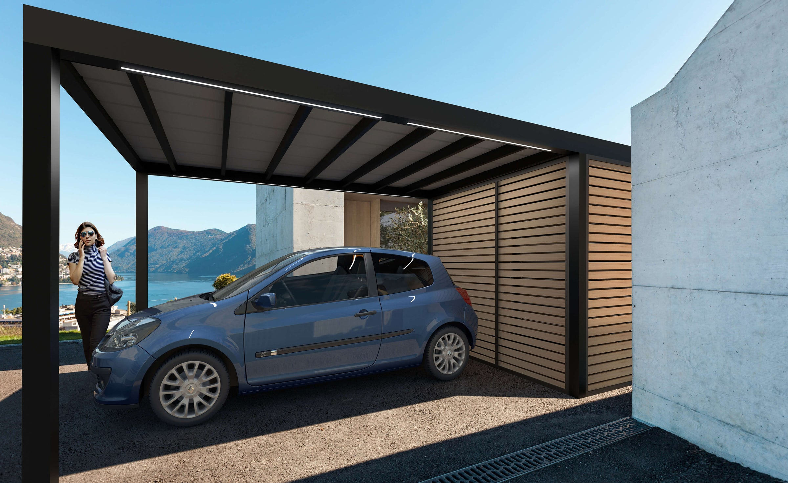
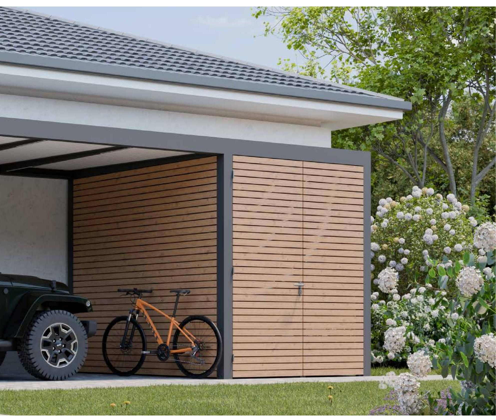


Časté otázky
Čo sa pýtate na realizácie
Nenašli ste odpoveď? Zavolajte nám, poradíme aj bez záväzku.
+421 948 482 266Sú to fotky vašich montáží?
Zábery označené Koverta sú z našich vlastných montáží. Zábery označené Soltec sú fotografie systému od výrobcu — používame ich tam, kde chceme ukázať prevedenie, ktoré sme na Slovensku ešte nefotili. Rozlíšenie je pri každej fotke uvedené, aby bolo jasné, čo je čo.
Dá sa niektorá realizácia pozrieť naživo?
Väčšina prístreškov stojí u ľudí doma, takže to závisí od toho, či majitelia súhlasia. Keď sa v okolí niečo dá pozrieť, pri zameraní vám to povieme — je to najlepší spôsob, ako si overiť prevedenie a hrúbky.
Viem dostať rovnaký prístrešok, aký je na fotke?
Áno, aj v inom rozmere. Napíšte nám, ktorá fotka to je — vieme z nej vyčítať typ konštrukcie, strechu, výplne aj odtieň a prepočítať to na váš rozmer.
Koľko taká realizácia stojí?
Cenu z fotky nevyčítate — dve zostavy, ktoré vyzerajú rovnako, sa môžu líšiť rozponom, strechou aj výplňami. Napíšte nám približný rozmer a mesto; ozveme sa do 24 hodín a dohodneme bezplatné zameranie.
Ako dlho taká realizácia trvá?
Od objednávky po montáž to býva rádovo niekoľko týždňov podľa vyťaženosti výroby. Samotná montáž štandardného prístrešku je jednodňová. Ak si objednáte aj betónové pätky, prídeme dvakrát — betón potrebuje čas vyzrieť.
Cenová ponuka zadarmo
Videli ste niečo podobné tomu, čo riešite?
Pošlite nám fotku miesta alebo pôdorys. Ozveme sa s návrhom, ktorý sedí na váš pozemok — nie s katalógovou zostavou.
Ďakujeme, dopyt je odoslaný
Máme ho u seba aj s fotkami, ak ste ich pripojili. Takto to bude pokračovať:
- Ozveme sa do 24 hodínTelefonicky alebo e-mailom, podľa toho, čo vám vyhovuje.
- Prídeme zameraťNa mieste, zadarmo a nezáväzne — aj keď si nakoniec vyberiete inak.
- Pošleme návrh a cenuS rozmermi, rozmiestnením stĺpov a termínom montáže.
Súri to? +421 948 482 266 · obchod@koverta.sk